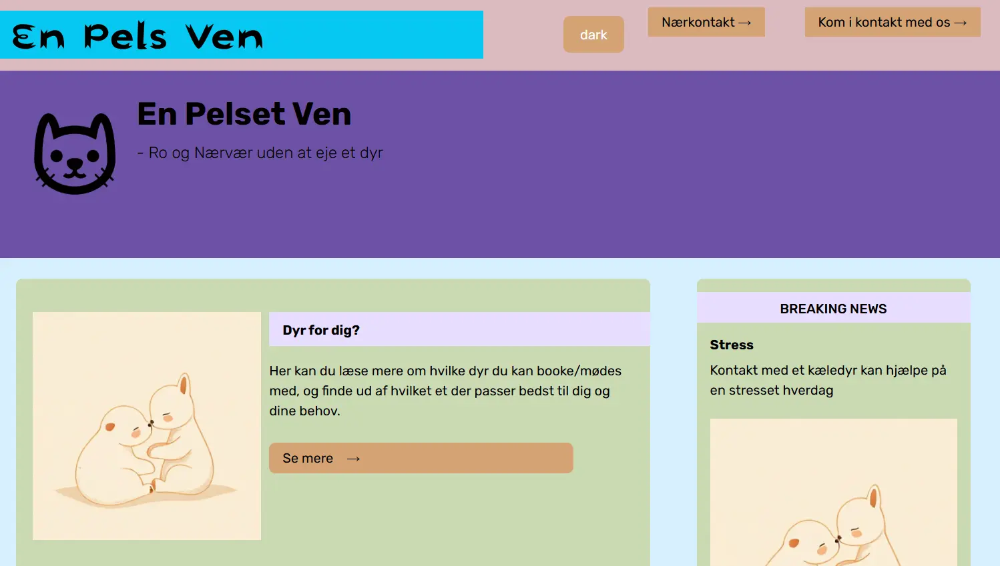

×

Emergency site
I Tema 4 arbejdede jeg videre på den skabelonhjemmeside, jeg havde modtaget i slutningen af Tema 3.
Fokus lå nu på at
implementere formularer, hvilket indebar læring om forms, input-felter og labels, samt en række
attributter der kan
tilføjes til formularer.
I dette tema lærte jeg også om animationer via @keyframes. Derudover arbejdede jeg med at fjerne og
tilføje classes i
JavaScript, samt tilegne mig grundlæggende JavaScript-kompetencer såsom fejlfinding med console.log,
oprettelse af
funktioner og implementering af event listeners for at gøre hjemmesiden interaktiv.
I forbindelse med JavaScript lærte jeg om betingelser (if-statements), som anvendes til eksempelvis
password-validering
og aldersverifikation på hjemmesider. For bedre at forstå dette koncept udviklede jeg et lille
JavaScript-spil i
konsollen.
Jeg lærte om variabler og deres værdier, herunder forskellene mellem let, var og const - hvor let og
var definerer
variable værdier, mens const anvendes til konstanter.
Derudover blev jeg introduceret til CSS-variabler, som gør det muligt at definere properties i
toppen af et stylesheet
og genbruge dem på tværs af hele siden, hvilket sikrer sammenhæng og letter vedligeholdelse.
Jeg fik en kort introduktion til branching via GitHub.
Jeg lærte om korrekt anvendelse af animationer på websites - hvordan de kan skabe flow og energi,
understøtte
brugerforståelsen og fremhæve vigtige elementer.
I forbindelse med arbejdet i Adobe Illustrator lærte jeg om SVG-formatet (Scalable Vector Graphics),
som kan beskrives
som tegninger lavet med kode.
Jeg arbejdede også med implementering af dark mode for at gøre hjemmesiden mere fleksibel. Desuden
fik jeg dybere
indsigt i, hvordan man promtper en AI for at opnå bedre resultater.
Jeg lærte at designe et logo og forstå, hvad der karakteriserer et godt logo.
Endelig lærte jeg om dialog-bokse, som jeg her har gjort brug af!
En Pels Ven hjemmeside